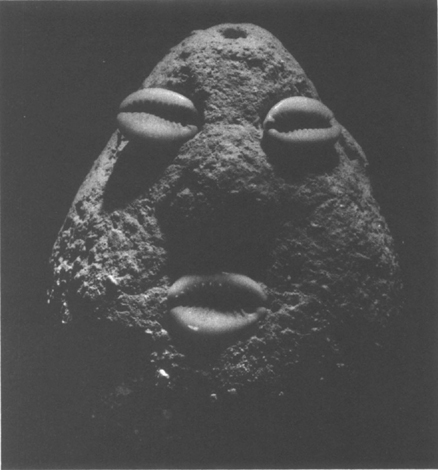

𓇢𓆸 The expansive field of African, Caribbean, and Afro-American art aesthetics is not new to me, it's true to me 𓆝 𓆟 𓆞 𓆝 𓆟
Hi there,
my name is Adrienne.
I am drawn to the transatlantic circulation of Black visual vernacular, linked to the Middle Passage, which triangulates West Africa, the Caribbean, and North America, among other sites.
This is pretty vast subject matter.
There are many channels to learn about Black aesthetics. So many cultures, locations, and histories. There is also a lot of blend, transference, and remixing as a result of slavery. For example, textile and spiritual traditions initially linked to one site can appear in another.
Entrypoints for me include:
- West African Adrinkra textile symbols
- African Lace-Bark in the Caribbean
- Victorian Jamaican fashion history
- African Burial Ground Memorial in NYC
